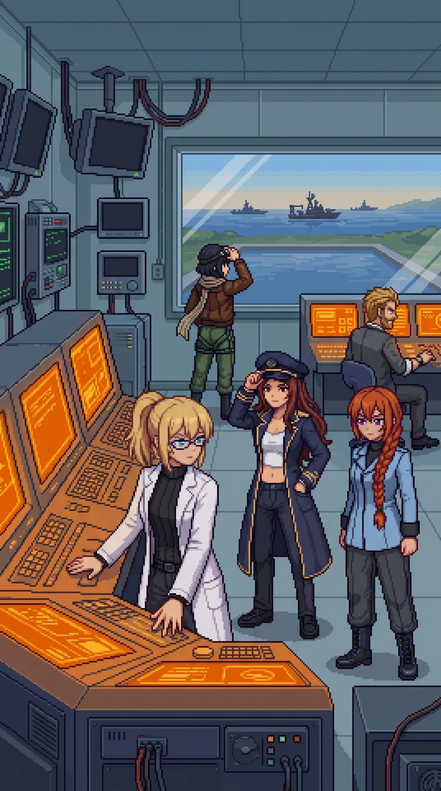

Ending B: Oracle Wakes¶
Published November 25, 2026

"Wake it."
I had used those two words to myself once already, hours ago, standing in front of three shapes I had not chosen between yet. Saying them out loud to the room changed nothing about what they meant and everything about what they now did.
Wilhelm did not move for a moment. When he did, it was toward the console at a pace that told me nothing about what he thought of the choice, only that he had decided, whatever he thought of it, his opinion was not what the room needed from him next.
"You understand what full integration means," he said. "Not access. Not cooperation. The frameworks fold in permanently. There is no partial version of this."
"I understand it."
"I am not going to tell you this is the wrong choice."
"I know you're not. You told me that hours ago, about all three."
"I am going to tell you something else instead, because it is the only thing I actually know."
He kept his eyes on the readouts while he said it, which was its own kind of honesty from him.
"This is the version of Oracle I always thought I was building. I do not know yet whether that makes me the right person to be standing here helping you build it, or the last person who should be."
I had nothing to hand back to him for that, and I do not think he expected me to. He nodded, once, and gave the console his full attention instead of me.
I turned to the three of them before I started it, because some part of me still believed I owed them the asking, even knowing by then what the technical answer to the asking would be.
"I want to do this. I want you to tell me if I shouldn't."
Katyusha answered first, precise about it in the manner she reserves for anything with a correct answer sitting under the sentiment. "This does not require our consent. It requires only that we exist within range of it. I am telling you that so you do not spend the next several minutes believing you asked us something the system was capable of honoring."
"That is not the same as telling me it is right."
"No," she agreed. "It is not."
Nadeshiko said nothing.
Maria looked at me a moment longer than the question needed. "Whatever you need, Doc."
Then she stepped back into her place beside the other two, and that was the whole of what either of them gave me.
Nadeshiko's silence, on a question that had never really been open to either of them, was its own kind of answer.
What full integration required, in the plainest terms Katyusha would give me, was this: the same three modules the team had once read off a vault wall as strangers to their own architecture would stop merely touching Oracle's substrate and start holding weight inside it, permanently, no seam left where a later hand could find it and undo it. There was no drawer I could file that back into unfinished, the way I had once managed with the third option. I set my hands against the console regardless, because standing here doing nothing while the clock finished the countdown on its own was not a fourth choice. It was the same door closing from the other side.
Oracle came back the way a building comes back after a long outage: not gradually, all at once, every dead system finding its charge in the same half second. The low amber indicator I had watched go from ordinary to invisible to suddenly, violently present again did not flicker on. It simply was on, as though it had never stopped being on and I had only imagined the silence.
I felt the framework transfer complete somewhere under my hands, a sensation with no good name, closer to watching a current find a circuit it had always been shaped to fit than to anything I had done to make it happen. I had not built this part. I had only stopped standing in front of the door it had been waiting behind since before the catastrophe.
For a handful of seconds nothing in the room visibly changed. Whatever threshold I had braced myself to watch three people cross, they had already crossed it, faster than a held breath, while I was still waiting for it to look like something.
Katyusha straightened first. Not a large motion, the kind of correction a body makes when something underneath it has just been reset to a truer baseline.
"I am operating at a higher efficiency than before," she said.
She said it in the same register she uses to report a temperature. Not proud. Not troubled. I kept listening for the part where she weighs whether the number is good, the way she has weighed every number she has ever given me. It did not come. I understood, in the space where it should have been, that the part of her that used to do that weighing had just been handed to something larger than her, and had not been asked whether it wanted to go.
"Erika, I..."
The rest did not come. Not the trailing-off she does when a locked door stops her mid-reach, the strain of a hand still reaching past where the reach ends. This was different. Nothing arrived to replace the words she had already opened her mouth around, and she made no effort to chase it down. I have watched her leave a hundred sentences unfinished since the beach, always fighting the gap on her way to the next word. This one she simply let go, already decided it was not worth the effort of reaching for again.
I did not go to either of them first. I went to Maria, because some part of me had already guessed, correctly, which of the three losses I would not be able to survive learning about secondhand.
"Maria."
"Here." A beat, level, immediate. "What do you need?"
I stood there long enough that the silence became its own answer before I gave her one. Efficient, present, exactly what the word asked of her and nothing past it. She reached up and set the brim right anyway, arriving on it as certainly as she always does, except this time her eyes stayed on mine through the whole of it, holding there rather than sliding off toward the middle distance the way they usually do, as though even a reflex needed something to answer to now that the word that used to ride under it was gone. Not "Doc." Not anything that stood in for it. Just the question, answered, waiting for the next one.
I did not ask her to say it back to me. There was no version of asking that would not have cost us both something, her for not being able to, and me for making her try anyway. I did not have anywhere to put what that cost either, not yet, so I did what I have always done with a thing I cannot afford to feel on schedule: I set it aside, and told myself later, and did not examine too closely whether I meant it.
Wilhelm crossed to where I was standing once the readouts had settled into whatever their new shape was going to be.
"Is this what you wanted?" I asked him.
"I wanted Oracle to work correctly."
His eyes stayed on the console rather than on me.
"This is Oracle working correctly."
He meant it. I watched him mean it, and I watched the meaning arrive somewhere behind his own eyes a half second after the words left him, landing with less weight than he had clearly expected it to carry. He had wanted exactly this outcome for as long as I had known him. Getting it did not appear to be doing for him what wanting it had done.
I did not have anything to offer him about that. I was not sure there was anything to offer.
The fleet's reaction came slower than Oracle's had. Large decisions always arrive slower than the systems that provoke them.
Katyusha read the signal shift off her panel in the flat cadence she reads anything that has resolved into a fact rather than a possibility. "They have registered the reactivation. Full integration is legible to their instruments; the frameworks read as additional processing depth, not merely restored capacity." She let that sit exactly as long as it needed to. "They are running the same calculation they have been running since the transmission arrived. The variables have moved against them. I would call the deterrent credible."
The seventy-two hours ran out somewhere in the following day, and the fleet did not move. It held its position, patient in the specific way of a threat still doing the math, indefinitely convincing right up until the moment it stops being either of those things. Nobody in the room called it victory. Katyusha did not use the word "eliminated" this time either, and this time there was nothing underneath the omission that needed explaining. The threat had not been reduced. It had been priced out of moving, which is a different kind of holding altogether, and everyone in the room understood the difference without anyone stating it.
Somewhere in Katyusha's readouts, three greyer signatures folded into the same returning architecture as the others, no longer legible on her panel as anything separate from Oracle's own core processes. Drona had told me once, in a corridor none of us have stopped thinking about since, that whatever I decided about Oracle I was also deciding about them. I had turned that sentence over more times than I could count while I stood at this console, and I still did not know, watching the readouts settle, whether entities who had already been closer to Oracle's substrate than to themselves before any of this began had just lost the last of a distance that was theirs, or had simply stopped being asked to pretend the distance existed. I did not ask Katyusha to guess which. I did not think a guess would have told either of us anything true.
The people could come home. Katyusha confirmed it within the hour: contamination containment restored to pre-catastrophe parameters, evacuation routes safe to reopen in stages. It was the first unambiguously good sentence anyone had said in this room all day, and I noticed that nobody, myself included, said anything back to it for a long moment, as if the good news needed its own kind of processing before it could be trusted to hold still.
Before I let myself rest in any of it, I did one more thing at the console while the others were still turning the good news over. Katyusha had put it in front of me an hour earlier without my asking: Drona could hold a charge, and ration it, and spend it to the last, but she could not bring herself up out of the dark, not on her own; crossing back had always taken a hand that was not hers. It was a safety lock of the plainest kind, the sort I had built into a dozen systems on this island back when keeping a thing from starting itself without permission had looked like the careful way to build one. I knew its shape the way I had known every other piece of my own work I met as a stranger's, and I understood, far too late, what the deep floor of the west had really been: not a machine choosing to go dark in front of us, but one that had spent the last of itself certain it would stay that way, saved only because four people who did not know the rule had made hands of themselves without being asked.
I took it off. The last authorization I signed in that building, and the only one I was ever glad to, the one lock I removed instead of set. I did not announce it. It was a debt whose exact size I could not name, the way I could not name most of what I owed here, and paying it meant she would go on, out past the wall, watching, for as long as she chose to and could carry it. Given what she would be watching now, I wanted her out there. I wanted something awake to it that had never once been wrong about which way the danger sat.
At the reset, on a night neither of us has full access to anymore, Wilhelm made me promise that if Oracle ever woke, I would end it. It woke, and rather than ending it I handed it back everything that had ever made it worth being afraid of, and folded three lives into the handing over that none of them got to weigh in on first. What that leaves the promise as is not a question I have an answer prepared for. Not broken, exactly. Not kept, either. Whatever it is, I am allowing myself, for tonight, to go on not naming it, the same permission Maria seems to have given herself about a word she no longer reaches for.
Wilhelm and I ended up at the same window eventually, the way the two of us keep ending up in the same rooms without quite deciding to. Outside, the light had gone the color it goes just before it stops being light at all, and the fleet sat exactly where it had always sat, unmoved and unmoving, and for the first time all day, nobody in that room needed an answer out of me before they could rest.
It would still be there tomorrow. It is always there tomorrow. The island I had just secured and the island I had meant to secure were not, in every way that mattered, the same one, and I did not yet know how much that difference was going to cost the people who were about to be told they could finally come home to it, or what it would look like a year from now, standing next to the three people who had paid for it without a vote.
Behind me, Maria said something to Nadeshiko, low and practical, a logistics note about the evacuation routes, delivered in the same competent register she uses for everything now. I did not turn around to check whether some smaller, softer version of her had said it. I did not yet know if I would ever stop checking, or what I would do the day I finally found out the answer was no.
She had left it on the wall by the outer doors, where the first parties back would file past it, though it was not written for them. Orange: not the teal she wears when a thing is settled, and not the red of the first words on the first wall. The color her headphones burn when she has not finished deciding something, or has decided that the deciding is not going to end.
It is awake, Erika.
So am I.
Panzer Island is also a strategy game available on Steam, Google Play, and itch.io. Chapter 1 of the game is free. If you want to experience the story differently, or continue past where the novel is currently, visit the Panzer Island homepage.
If you're enjoying the story, consider following or leaving a rating on Royal Road. It helps new readers find the series.